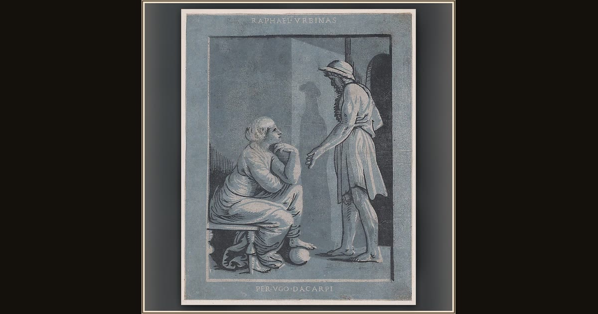

Penelope and Odysseus
Ugo da Carpi · ca. 1520–27 · The Metropolitan Museum of Art · New York, USA
In this old Italian print, faithful Penelope sits beside the husband she waited twenty years to hold again. Explore its place in Book XXIII of the Odyssey.